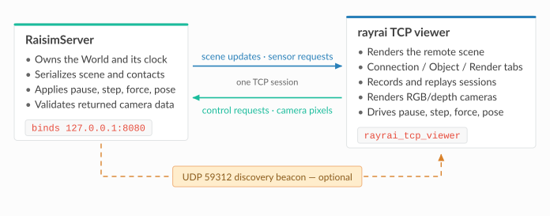
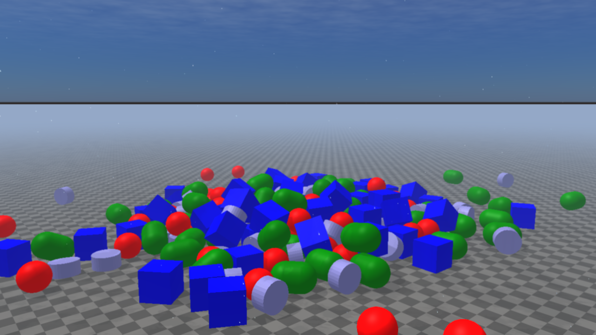
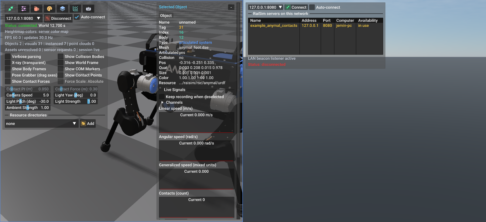
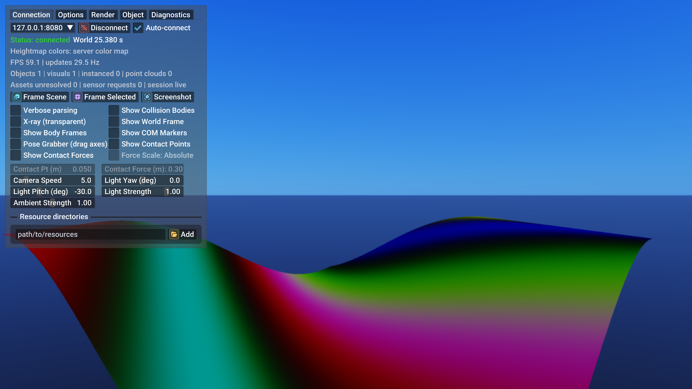
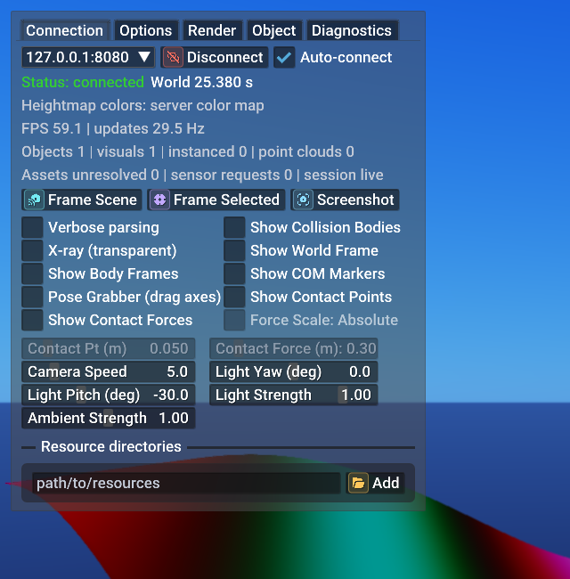
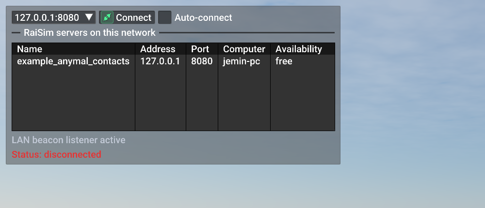
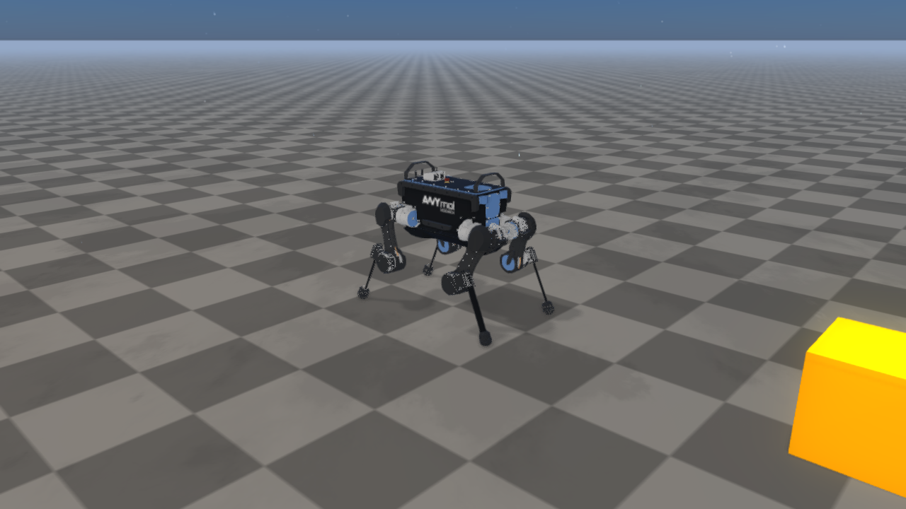
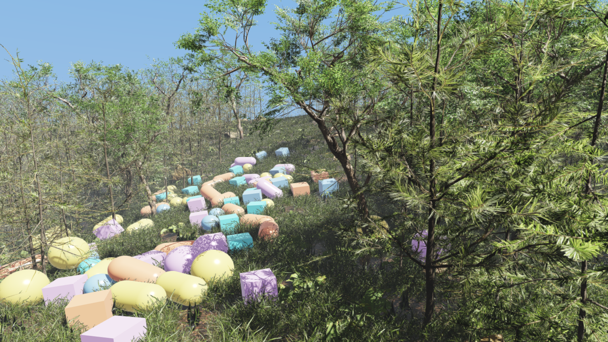
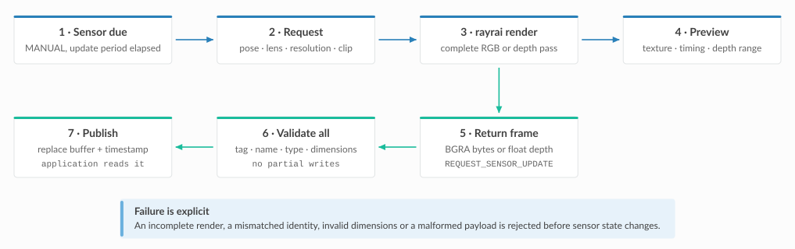

Rayrai TCP Viewer
rayrai_tcp_viewer is the recommended visualizer for RaisimServer
simulations. It connects to a running server over TCP, renders the world with
the full rayrai pipeline (PBR, image-based lighting and post-processing), and
lets you pause, step, push and reposition objects without touching the
simulation code.
This page covers the viewer application (panels, controls, command-line
options) and the wire format for writing custom clients. Applications that
embed the renderer with raisin::RayraiWindow do not use this binary; see
rayrai Visualizer for that in-process path. For the server-side API the viewer
talks to, see Raisim Server.
The binary packages ship the rayrai library but not the viewer executable. The
viewer’s sources live in this repository under examples/src/rayrai/tools,
and the examples CMake project builds the rayrai_tcp_viewer target from
them. Each checkout pins one RaiSim release, and its viewer sources match that
release’s rayrai library (see Installation). After updating the
checkout, configure it again, which downloads the pinned packages, and rebuild
rayrai_tcp_viewer.


One TCP connection carries scene updates, interactive control requests, and RGB/depth sensor requests. UDP beacons are only used to discover compatible servers; a direct host and port always works without discovery.


The viewer connected to the primitive_grid example. It uses the same
rayrai PBR pipeline as the in-process RayraiWindow: procedural sky,
directional shadows, and the reflective checker ground of the Balanced,
High and Ultra presets.
Quick start
Start any
RaisimServerexample. The server listens on127.0.0.1:8080by default.Launch the viewer:
./build-examples/examples/rayrai_tcp_viewer
On first launch the viewer connects to
127.0.0.1:8080. Later launches reconnect each pane to the endpoint it last used (see Persistence) unless--host,--portor--connect host:portnames another. To change the endpoint, edit the host and port fields in the endpoint popup of the Connection tab, or click a server in the table of a pane that has no session.
To run a RaiSim world file without writing a server program, drop the world XML
onto the viewer or pass --simulate world.xml; see Local world simulation.
Run ./build-examples/examples/rayrai_tcp_viewer --help for the full option
list. On Windows the executable is .\build-examples\bin\rayrai_tcp_viewer.exe.
The TCP client and server discovery work the same on Windows, Linux and macOS.
Desktop launcher (Linux)
scripts/install_rayrai_viewer_launcher.sh registers the viewer as a regular
desktop application, so it can be started from the Activities overview or pinned
to the GNOME / Ubuntu dock instead of a terminal:
scripts/install_rayrai_viewer_launcher.sh # install and pin
scripts/install_rayrai_viewer_launcher.sh --no-pin # install only
scripts/install_rayrai_viewer_launcher.sh --uninstall # remove everything
It writes three things, all under the invoking user’s ~/.local (no root, no
system-wide state). Re-running it is safe:
Path |
Purpose |
|---|---|
|
Wrapper that sources |
|
The desktop entry. Its |
|
The RaiSim logo, centered on a rounded light-grey plate and rendered at
each icon size (icon themes expect a PNG whose size matches its
directory). Without the plate, the logo’s transparent lower third
leaves the mark sitting high, and its dark wordmark disappears against
a dark dock. Without ImageMagick the script falls back to an absolute
|
Useful options:
Option |
Effect |
|---|---|
|
Executable to launch. Defaults to
|
|
Repository root, used to find |
|
Do nothing unless |
|
Plate shape behind the logo: |
|
Plate fill, as any color ImageMagick accepts. Defaults to |
|
Add the launcher to the dock favorites (the default), or install it without touching them. |
|
Only report failures. |
|
Remove the wrapper, desktop entry, icons and dock entry. |
The desktop entry also sets Path= to the directory holding the executable,
and the wrapper leaves any working directory that contains a .raisim
directory. Both avoid the same startup crash: the activation key is read from
the relative path .raisim rather than $HOME/.raisim. A dock launch
starts in $HOME, where .raisim is a directory, so the viewer would try
to read that directory as a key file and abort before its window appears.
The launcher points at the build-tree executable, so re-run the script if the repository moves or the build directory is deleted.
Installing it from the build
Configuring the examples with RAISIM_EXAMPLE_DESKTOP_LAUNCHER adds a
post-build step that runs the script after every Release build of the
rayrai_tcp_viewer target, keeping the launcher pointed at the current
executable:
cmake -S . -B build-examples -DCMAKE_BUILD_TYPE=Release \
-DRAISIM_EXAMPLE_DESKTOP_LAUNCHER=ON
The option is cached, so it stays enabled for that build tree until it is set
back to OFF. It defaults to OFF so that building the examples does not
rearrange anyone’s dock. The post-build step never fails a build: it exits
quietly on non-Linux hosts, on non-Release configurations and on machines with
no graphical session, so continuous integration is unaffected.
Server discovery
While running, RaisimServer sends a UDP discovery beacon once per second to
port 59312. With the default loopback bind, the beacon is sent to
127.0.0.1. After server.setBindLoopbackOnly(false), the beacon is
broadcast on the local network.
The viewer listens on the same UDP port (one listener serves every pane) and
drops a server about eight seconds after its last beacon. A beacon is
compatible when its protocol version equals the viewer’s own
(kProtocolVersion); other beacons are hidden, and the endpoint popup says
which version it lists. Compatible servers appear in the server table of a pane
that has no session, and in the endpoint popup of the Connection tab once
the pane has one. Both lists refresh at least every two seconds, so there is no
rescan button. Discovery only fills these lists: --connect host:port and
typed endpoints work even when UDP broadcast is blocked.
The beacon carries the server’s executable name (on Linux; other platforms
report RaisimServer), host name, bind mode, and whether its single client
seat is taken. These fill the table’s Name, Computer and
Availability columns.
For cross-machine connections on Windows, allow both the TCP server port
(default 8080) and UDP discovery port 59312 through the firewall.
Local world simulation
Drop a RaiSim world XML (root element <raisim>) onto a pane, or start the
viewer with --simulate world.xml, and the viewer runs that world itself:
Child process. The world is loaded and stepped in a child process (the viewer executable itself, started in an internal worker mode). A long model import does not block the UI, and a world that fails does not take the viewer down.
Connection. The child serves the world with a
RaisimServerbound to127.0.0.1only, on port20000 + (process id mod 20000)or the next free port, and the pane connects to it automatically. From then on the pane behaves like any other connection: simulation control, sensors and recording all work.Timing.
The world stays at its initial state until the viewer first connects.
It then steps in real time at the XML’s own time step.
If it falls more than 100 ms behind, it drops the backlog instead of fast-forwarding.
Mesh paths. Meshes resolve from the XML’s folder and its
assetssubfolder, in addition to the resource directories.Stopping.
The Connection tab shows
Local world: <file>next to a Stop simulation button.Stopping, disconnecting, dropping another file, closing the pane or quitting the viewer ends the child. On Linux and macOS it gets
SIGTERM, thenSIGKILLafter 200 ms; on Windows it is terminated if it has not exited after 200 ms.The child also exits on its own when the viewer’s end of their pipe closes, so it does not outlive a crashed viewer. On Windows a job object ensures the same.
Activation key.
--activation-keyis passed on to the child.Failures. If the world does not load, the status line reads
Simulation stopped:followed by RaiSim’s error and the end of the child’s log. Startup gives up after five minutes. The log and the endpoint file live in a temporaryrayrai-simulation-*folder that is removed when the simulation stops.
Dropping another world replaces the running one, and dropping a world on a pane
that is connected to an external server disconnects it first. Dropping a URDF
(<robot>) or MJCF (<mujoco>) file opens the model inspector instead
(see Articulated-system inspector mode) and stops a local world; a model drop
on a pane connected to an external server is refused, so disconnect first.
Command-line options
Option |
Effect |
|---|---|
|
Set the host and the port separately. Defaults are |
|
Set host and port together; IPv6 addresses use |
|
Whether to dial the server on launch and keep retrying while
disconnected. This also applies to panes restored from the saved layout.
The environment variable |
|
Run a RaiSim world XML in a simulation process owned by the viewer and connect to it (see Local world simulation). The viewer exits with code 1 if the file is not a world or the simulation stops before the first connection. |
|
RaiSim activation key for the viewer and any local simulation it starts. |
|
Do not write |
|
Open a URDF or MJCF file in the articulated-system inspector at launch (see Articulated-system inspector mode). Disables auto-connect. |
|
Skip the shader pre-warm pass. Startup is faster, but the first frame with content may stall while shaders compile. |
|
Also run the heavier renderer warm-up for the first content frame at startup, so that the first loaded model (for example a dropped URDF) appears immediately. Useful for demos. |
|
Add a mesh/resource search directory. Repeat the option for multiple directories. The directories are also added to the saved Resource directories list. |
|
Set the initial window size ( |
|
Start with both side panels collapsed, leaving the scene unobstructed.
Also set by |
|
Disable auto-collapse of the left overlay. Useful for documentation screenshots and recorded demos. |
|
Frame the scene after the first state update. |
|
Set an explicit camera position and target. |
|
Set the follow-camera offset from its target. |
|
Reapply |
|
Save the rendered scene texture to |
|
Initial Output folder of the Record tab: screenshots (F12), PNG sequences, videos, session logs, signal CSV exports and recordings requested by the server. Defaults to the working directory. |
|
Record the raw TCP stream to a session file for later replay. |
|
Target TCP scene-update request rate, 15-120 Hz (default 60 Hz). The
value is saved as |
|
Replay a recorded session instead of opening a TCP connection. Disables auto-connect. |
|
Playback rate multiplier (1.0 = real time), greater than 0 and at most 100. |
|
Loop the recorded session when replay reaches the end. |
|
Write the parsed scene graph as JSON once the first scene with objects
arrives. The viewer keeps running; combine with |
|
Log object poses to CSV while updates arrive. |
|
Load additional |
|
For batch runs: exit if the first connection has not succeeded within this wall-clock time. |
|
Exit after the given wall-clock duration. |
|
Print the authoritative option list for this build. |
Environment variables
Variable |
Effect |
|---|---|
|
Boolean; |
|
Same as |
|
Same as |
|
Same as |
|
|
|
|
|
Path to a TrueType font for the UI. |
|
Font rasterization density, 1.0-3.0 (default 1.75). |
|
Boolean; start with Show COM Markers on. |
|
Boolean; print the average frame rate on exit. |
|
Path to the |
Split panes
The viewer window can be divided into independent panes, the way the Terminator terminal emulator splits its window. Each pane is a complete viewer session with its own renderer, camera, TCP connection and control panels, so one window can watch several simulations at once.


A vertical split. The left pane is attached to a server running an ANYmal
example (its executable, example_anymal_contacts, is listed in the right
pane’s server table) and shows the usual tabbed overlay. The right pane has
no session yet, so it shows only the connect prompt. The blue outline marks
the focused pane. The server row is amber and reads in use because the
left pane holds that server’s single client seat.
Right-click a pane’s 3D view to open the pane menu:
Action |
Shortcut |
Result |
|---|---|---|
Split Horizontally |
|
Horizontal divider; the new pane goes below |
Split Vertically |
|
Vertical divider; the new pane goes to the right |
Close Pane |
|
Closes that pane’s connection and gives its space to the neighbor |
The menu header names the pane by its endpoint and status, so two panes are easy to tell apart. The menu opens only over the rendered image; over a panel, a right-click keeps that panel’s own behavior. The last remaining pane cannot be closed.
Drag a divider to change the split. A divider stops at 5 % of its region, so a pane never becomes too narrow to grab back. The divider is drawn as a 2 px line, but it can be grabbed a little to either side.
Focus
Clicking or scrolling in a pane focuses it. The focused pane is outlined, and it
is the one that keyboard shortcuts (F, C, R, M, G, F12,
Esc), keyboard camera movement (WASD, Space) and a dropped file act
on. Mouse input always goes to the pane under the pointer, so you can rotate a
pane’s camera or pick in it without clicking it first.
Resolution and cost
A pane renders into its own texture at its own size, so a four-way split renders four quarter-sized frames rather than four full-sized ones. Mesh data is shared process-wide: two panes showing the same robot upload its geometry to the GPU once. Each pane keeps its own render targets and shadow maps, which are the main per-pane memory cost, and each runs its own TCP session at the configured update rate.
The panels are sized for a full window, so in a pane narrower than about 900 points they compete for space. The object inspector gives way to the left overlay rather than overlapping it, and is hidden when even its minimized width no longer fits. It comes back when the left overlay collapses, 3.5 s after the pointer leaves it.
Persistence
The split arrangement, the divider positions and each pane’s last endpoint are
written to the settings file (see Settings file) as pane_layout and
pane_endpoint keys, and restored on the next launch:
pane_layout: V0.5000(L1,H0.5000(L2,L3))
pane_endpoint: 1 127.0.0.1:8080
pane_endpoint: 2 10.0.0.7:8080
pane_endpoint: 3 10.0.0.9:8080
pane_layout is a binary tree. L<id> is a pane; V<ratio>(a,b) is a
vertical divider with a on the left and b on the right, and
H<ratio>(a,b) a horizontal divider with a above b. The example is
pane 1 on the left and panes 2 and 3 stacked on the right. With
--no-save-settings the layout, like every other preference, is not saved. A
settings file written before split panes existed has no layout and opens a
single pane; an unreadable layout is reported on stderr and ignored.
Each restored pane reconnects to its saved endpoint on its own, retrying until
the server appears; --no-auto-connect or RAYRAI_TCP_VIEWER_AUTO_CONNECT=0
turns that off. Command-line options that name a session (--connect,
--simulate, --screenshot, --replay-session, --record-session,
--trajectory-csv, --inspect) apply to the first pane only, and an
endpoint given on the command line replaces only the first pane’s saved
endpoint.
Settings file
Preferences are stored in $HOME/.rayrai/settings.yaml. On Windows, where
HOME is often unset, the viewer falls back to
%APPDATA%\rayrai\settings.yaml, then to
%USERPROFILE%\.rayrai\settings.yaml; with none of these variables set it
uses .rayrai/settings.yaml in the working directory. The file has one
key: value per line, # starts a comment, and recent_connection,
pane_endpoint and resource_dir may repeat. Values are clamped to their
valid ranges when read. The viewer writes the file 750 ms after a change and at
exit; --no-save-settings disables every write.
Every key is shared by all panes except pane_endpoint. The keys cover render
quality and lighting (render_quality, light_strength, light_yaw_deg,
…), camera (camera_speed, camera_fov_deg, camera_near,
camera_far), shadows (shadow_*, shadowed_light_budget, …),
post-processing (color_mode, bloom_*, screen_space_ao_*,
depth_of_field_*, …), PBR (high_fidelity_pbr, pbr_exposure, …), sky
and weather (sky_*), ground (reflective_ground*), the UI (ui_scale,
show_collapsed_logo), tcp_update_rate_hz, and the lists above.
color_mode accepts fast_linear, aces_approx, unreal_preview,
filmic_approx and agx_approx (or 0-4).
Until you change a render setting yourself (render_quality_user_set is
false), the viewer picks a render preset for the GPU at every launch and logs
INFO: Auto render quality selected …. Software rasterizers get Fast; other
GPUs are scored by name, maximum texture size, MSAA samples and texture units.
Reset Rendering Settings on the Render tab returns to that automatic
choice.
The following are not saved: the Record tab’s output folder and video settings, camera bookmarks, debug toggles, contact marker sizes, the Objects tab filter and sort, the spawn form, signal channel choices, force and wire settings, and the window size.
UI layout


The viewer’s left overlay opened on the Connection tab while attached to
dynamic_heightmap. The rest of the window is the rayrai-rendered scene;
the overlay floats above it with a translucent background so the scene stays
visible.
Every pane carries its own copy of this overlay, positioned inside that pane (see Split panes). With a single pane, the default, the overlay sits in the window as shown above.
The overlay has two compact panels:
Left panel: seven icon tabs, named by their tooltips: Connection, Options, Record, Render, Objects, Diagnostics and Help. Every viewer setting lives here.
Right panel, the selected-object inspector: appears when you click an object in the scene or in the Objects tab. It shows the object’s streamed properties, live signal plots, joint angles for articulated systems, and its sensors and actuators (see Right-side inspector). The controls that act on the selection are in the Selected control section of the Objects tab.
The left panel opens when the pointer is over it and collapses to the logo after
3.5 s without hover or interaction; --keep-overlay-open disables that. The
inspector has a - / + button that folds it to a narrow strip. Pass
--minimize-panels to start with both panels minimized.
Connection tab — widget reference


Detail of the Connection tab. The reference below follows the tab from top to bottom.
Connection row.
Endpoint dropdown: the popup has host and port fields, Save Endpoint, and the saved and recent endpoints. While the pane has a session it also lists the compatible
RaisimServerbeacons with host, executable, bind mode and connection status; beacons of another protocol version are hidden, and the popup says which version it shows. A pane without a session lists the beacons in its server table instead (see Connect prompt — a pane with no session). Saved endpoints persist in the settings file.Connect / Disconnect button: opens or closes the TCP connection. Connect is greyed out while the articulated-system inspector is open.
Auto-connect checkbox: when on, the pane dials the server on launch and keeps retrying while disconnected (every 250 ms for a loopback host, every 3 s otherwise). When off, the pane connects only when you click Connect, which suits offline scene inspection.
Local world. While the pane runs a world file (see
Local world simulation), a Local world: <file> line and a
Stop simulation button appear here.
Status block (read-only). Status: <text>, green while the TCP
connection is up and red otherwise, followed by:
World <t> s: the server’sworld.getWorldTime()from the most recent frame.Heightmap colors: server color map: a fixed reminder that height maps are colored with the color map the server streams; the viewer has no override.FPS X | updates Y Hz: renderer frame rate and incoming TCP update rate. If FPS drops while updates stay high, the renderer is the bottleneck (lower the quality preset on the Render tab). If updates drop while FPS is fine, the server or the network is the bottleneck.Objects N | visuals N | instanced N | point clouds N: scene counts parsed from the latest frame.instancedcounts streamed instanced visuals plus the batches the viewer builds for meshes repeated across articulated systems.Assets unresolved N | sensor requests N | session live|recording|replay:unresolvedis the number of mesh paths that could not be found; fix it with--resource-dir PATHor Resource directories below. The session marker shows whether the pane is recording a session log (--record-sessionor the Record tab) or replaying one.
Framing uses the keyboard: F fits the scene and C the selected object.
Screenshots are taken from the Record tab or with F12.
Debug toggles. A two-column grid of checkboxes:
Verbose parsing: prints a line per received frame and per streamed object (type, tag, byte offset) to stdout, and missing meshes to stderr. Use it when chasing wire-format issues, then turn it off again; the output is heavy.
Show Collision Bodies: draw the collision shapes the contact solver sees instead of the visual meshes, for example to tell an oversized visual mesh from a correct collision body.
X-ray (transparent): alpha-blend every opaque object so you can see through the scene, for example into nested articulated systems.
Show World Frame: draw the X/Y/Z axes at the world origin.
Show Body Frames: draw body-frame axes for the selectable streamed bodies.
Show COM Markers: draw markers at the streamed center-of-mass positions.
Pose Grabber (drag axes): show a world-axis pose gizmo on the selected single body; the dragged pose is sent when the grabber is turned off or the selection changes (see Force / pose application).
Show Contact Points: draw a small sphere at every contact point the server streams (
world.getContacts()).Show Contact Forces: draw an arrow for the force at every contact point. Use the Contact Pt and Contact Force sliders below to make the markers visible at the scene’s scale.
Force Scale: Absolute: arrow length is the force magnitude times the Contact Force slider (meters per newton). When off, the longest arrow of each frame is as long as the slider value and the others are scaled relative to it.
Light and camera sliders. Shortcuts to the main directional light and the camera. They change the same settings as the Camera and Light sections of the Render tab:
Camera Speed: WASD movement speed.
Light Yaw / Light Pitch: direction of the main directional light, in degrees. The default pitch is
-30°.Light Strength: multiplier on the main light’s diffuse and specular colors, 0-2; 0 turns direct light off. While the weather model drives the sun (Render tab), it scales the weather-driven sun instead.
Ambient Strength: multiplier on the main light’s ambient color (
RenderQualitySettings::mainLightAmbient), 0-2. Lowering it darkens the shaded sides without dimming the sun.Contact Pt / Contact Force: size of the contact spheres and arrows described above.
Light Yaw, Light Pitch and Ambient Strength have no effect while the weather model drives the sun.
Resource directories. A dropdown lists the current directories, each with
an x button to remove it; Add opens a folder browser. An added
directory joins the mesh search path and is used from the next frame on. Use it
to fix Assets unresolved for URDFs whose mesh paths assume a workspace root
that is not on the default search list. --resource-dir PATH (repeatable)
adds directories from the command line. Every path field in the viewer uses the
same built-in file and folder browser on all platforms.
Connect prompt — a pane with no session


A pane with no session shows the endpoint row and the live server table, and nothing else. Clicking a row connects that pane to that server.
Until a pane has a scene, it shows no tab bar, only the connection controls:
Endpoint row: the
host:porteditor, Connect and Auto-connect, as described above.Server table: one row per compatible
RaisimServerbeacon, with the columns Name (the server executable), Address, Port, Computer (the server’s host name) and Availability. Clicking anywhere on a row fills in the endpoint and connects.Status line: amber while a connection attempt is in progress, red when idle or after a failure.
Only servers that are sending beacons are listed. Saved endpoints stay in the endpoint dropdown, because nothing guarantees that a server still listens on them. The table refreshes itself (new beacons are read every frame and the list is rebuilt at least every two seconds), so there is nothing to rescan.
A server whose client seat is already taken reads in use and is drawn in
amber. The row stays clickable, because a beacon can be a second or two old and
the seat may have been freed since. RaisimServer serves one client at a time
and only calls accept() while it has none, so a connection to a busy server
completes the TCP handshake in the kernel backlog and then gets no reply; at the
socket this looks exactly like a slow server. After five seconds without a first
reply the pane drops the connection and reports server already occupied if
the beacon says the seat is taken, and no reply from server otherwise. An
established session that receives no reply for five seconds is dropped the same
way.
The tabs and the other viewer controls appear as soon as the pane has a scene.
A replay (--replay-session) or a locally running world file also counts as
a session.
Options tab
The Options tab holds viewer-side preferences; nothing here is sent to the server:
Interface: the UI Scale slider (saved across runs) and Show collapsed logo, which shows the opaque RaiSim badge while the left panel is collapsed.
Camera: Reset Camera (same as
R), orthographic views that snap to Top / Bottom / Front / Back / Left / Right projections of the current scene bounds, and Perspective to return.Bookmarks: four camera slots, each with a Set and a Restore button.
Window: Toggle Fullscreen, same as
F11.
Record tab
Everything that writes a file lives in the Record tab. Screenshots, PNG
sequences and the other exports go to the Output folder, which starts at
--screenshot-dir (or the working directory) and has a Browse button.
The video and session-log path fields start with a timestamped file name in
that initial folder.
Screenshot: writes
rayrai_tcp_viewer_<YYYYmmdd_HHMMSS>.png, same asF12.Video: records the scene texture to MP4, MOV or MKV through
ffmpeg. Controls: a path field with Browse, Frame rate (fps) 1-240 (default 30), CRF (lower = better) 0-51 (default 20), Start Recording / Stop Recording, and a live frame and size counter. Encoding uses libx264 and yuv420p at a constant frame rate, cropped to even dimensions. Resizing the window stops a recording. If$RAYRAI_FFMPEGis set, the viewer uses that executable only; otherwise it searchesPATHand, on Linux and macOS,/opt/homebrew/bin,/usr/local/bin,/usr/bin,/binand/snap/bin. Without ffmpeg the video controls are disabled with an explanation.PNG sequence: Save every rendered frame, with an Every N frames stride (1-120), writes numbered PNGs; Encode To Video turns a finished sequence into a video.
Session Replay Log: Start Session Log / Stop Session Log record the raw scene updates to a
.rrtcsfile for--replay-session. This is not a video: a replay can be rendered again later at any quality preset.Replay (while replaying a session): Pause Replay / Resume Replay, Step, Restart Replay, Replay speed 0.05-8x, a Timeline slider that seeks (and pauses), and a frame counter.
Render tab
The Render tab exposes the rayrai pipeline settings documented in Render quality, tone mapping, color grading, Lighting, shadows, and HDR/IBL, Post-process effects and Weather and atmospherics:
Quality: a Fast / Balanced / High / Ultra / Custom slider. Picking a preset loads the defaults of
RayraiWindow::defaultRenderQualitySettings(); changing any other control on this tab switches to Custom. The viewer’s Ultra also raises light strength to 1.6, sets exposure to 0.65 and uses the Unreal Preview color mode.Background and Sky: background color, the procedural sky (sun strength and size), and a Weather model checkbox (High, Ultra and Custom only) with a preset (Clear, Hazy, Overcast, Fog, Rain, Heavy Rain, Snow, Storm, Night Clear, Night Rain, Custom), a weather quality, and grouped controls: Time & Sun, Clouds, Atmosphere, Weather Effects (precipitation, snow, humidity, wetness accumulation, lightning, lens droplets) and Wind. Weather exists only in the viewer: the TCP protocol carries no weather.
Camera: move speed, FOV, near and far clip.
Light: key strength, yaw, pitch, ambient, the ambient, diffuse and specular colors, and Fill/rim lights. Yaw, pitch, ambient and the colors are disabled while the weather model drives the sun.
Shadows: on/off, shadow map size, bias, strength, PCF radius, the orthographic box and center offset, update every frame, the shadowed-light budget, point-light shadows, resolution scales, and automatic selection of an imported shadow light.
Post: fog, gamma, the Color mode curve (Fast Linear, ACES Approx, Unreal Preview, Filmic Approx, AgX Approx), FXAA, bloom (threshold, strength, radius, knee, quality), screen-space AO (radius, strength, bias), the opaque depth prepass, and depth of field (focus distance, focus range, maximum blur radius).
PBR: high fidelity, Tone mapping, exposure, environment LOD, environment and key intensities.
Ground: Reflective checkerboard with roughness and metallic. It is on in the Balanced, High and Ultra presets.
Advanced: transparent instance sorting, additional lights per frame and the minimum light influence.
Reset Rendering Settings: return to the automatically chosen preset (see Settings file).
Objects tab
The Objects tab lists every selectable object the server has sent so far, with:
Filter: case-insensitive substring match on object name, type or tag.
Sort: Name, Type, Tag or Index. Type is the default, with the name as tie-breaker.
Group by type: split the list into one labeled section per type.
Hide collisions: hide collision-only rows.
Rows: each row has an icon for its shape or type; clicking a row selects the object, as clicking it in the scene does.
Ruler: Measure (M), Set A / Set B from the selection, and Clear; shows the distance between the two points.
Simulation. Icon buttons (tooltips Pause simulation, Resume simulation, Step 1 frame, Step 10 frames) are enabled when the server negotiated sim control; otherwise a note says why. A step button pauses a running simulation first. State streaming continues while the simulation is paused.
Scene editing. Works with any server of the same protocol version, whether or not sim control was negotiated:
Add object: spawn a Box, Sphere, Cylinder, Capsule, Mesh, Articulated system, Ground plane or Height map (PNG). Depending on the shape, the form takes a name, a file path (resolved on the simulation host) for meshes, robots and height maps, the dimensions, mass, body type (dynamic, kinematic or static), an appearance string, Place at camera target (on by default), and an optional initial state (velocities, and a quaternion in w, x, y, z order). The form validates the request before sending it and, when the server runs on this machine, reports
file not found on this hostfor a missing file. This matters because the server closes the connection on a request it rejects (see Writing a custom client).Delete Selected: remove the selected object.
Export world: ask the server to write its world as XML to a path on the server (Export World XML). Browse… is offered only for a server on this machine.
Selected control. For the selected object: the body index of an articulated system (Body follows selection), Shift-drag force with Mouse accel (m/s² per pixel), a force and Point offset with Apply Force, a torque with Apply Torque, the interaction wire (Ctrl-drag wire, Cmd-drag wire on macOS) with Wire stiffness, the pose editor (Sync Pose / Set Pose, single bodies) and the generalized-coordinate editor (Sync GC / Set GC, articulated systems). The sync buttons copy the streamed state into the editors. All requests sent from this section need sim control.
Diagnostics tab
The Diagnostics tab is for debugging a connection rather than driving one:
Security: a reminder that the TCP traffic is plain and unauthenticated; use an SSH tunnel, a VPN or a TLS proxy on untrusted networks.
Data Transfer: recent receive bandwidth and the current, average, jitter and maximum request round-trip time. The display refreshes at most 5 times per second so that diagnostics do not slow down rendering.
Target: the TCP update request rate, 15-120 Hz; the runtime equivalent of
--update-rate.Packets: recent live or replayed frames with byte size, parse status, object and visual counts, pending sensor count and missing asset count.
Assets: every streamed mesh, marked resolved with the path it was found at, or missing with the resource directory that was searched; the
Assets unresolvedcount on the Connection tab summarizes this table. Refresh Assets rescans, and Export Scene JSON writes the scene and this table to the--export-scenepath or torayrai_tcp_viewer_scene_<YYYYmmdd_HHMMSS>.jsonin the output folder.Server Metadata: executable, host, bind mode and status from the compatible discovery beacons.
Help tab
Keyboard and mouse lists the shortcuts: F frame the scene, C
frame the selection, R reset the camera, M cycle the measure tool (off,
two-point ruler, three-point angle), G toggle the pose grabber, Esc
cancel the measure tool or leave fullscreen, F11 fullscreen, F12
screenshot, Shift + left-drag apply a force, and Ctrl + left-drag
(Cmd on macOS) pull a body with the interaction wire.
The camera uses the rayrai renderer’s mouse and keyboard controls:
Left-drag rotates the view. With an object selected, the camera orbits it; in an orthographic view, left-drag pans.
A short left click selects the object under the pointer and makes it the orbit center; clicking empty space clears the selection.
The scroll wheel moves the camera toward or away from the selected object (or forward and back when nothing is selected), and zooms an orthographic view.
W/A/S/Dmove the camera andSpaceraises it while no object is selected. Only the focused pane’s camera moves.
Right-side inspector
The right-side panel only appears when an object is selected. Its Object tab shows, top to bottom:
Name, Tag (the server’s visual tag), Index, Body (local body index), Type, Mesh (the mesh file name, when there is one), and the Articulated and Collision flags.
Pos / Quat (w, x, y, z): the current streamed pose in world coordinates, plus Size and Color.
Lin vel, Speed and Angular: estimated from successive frames once enough samples are available.
Resource: the resource directory of the mesh, when available.
Live Signals: plots of the channels picked under Channels:
speed.linear,speed.angular,pos.x/y/z,vel.x/y/z,contacts,speed.generalized, andjoint.<name>.q/.qdfor articulated systems. Channels marked selection only stop when the object is deselected. Keep recording when deselected pins the object; its traces are labeled (pinned). Each trace keeps the last 600 samples. Export CSV writesrayrai_signals_<name>_<YYYYmmdd_HHMMSS>.csvto the Record tab’s output folder, with atimecolumn and one column per channel. Contact counts need the contact-object-tags protocol feature.Joints (articulated systems only): read-only joint angles. To change them, use the generalized-coordinate editor of the Objects tab, which sends
CR_SET_GC.
A Sensors (N) tab lists RGB, depth, IMU and spinning-LiDAR metadata. RGB/depth entries show render timing and the latest preview; camera entries have Frustum and Frame checkboxes, and depth entries show their near~far range (see RGB/depth sensor round trip).
An Actuators (N) tab appears for an articulated system with actuators (see Actuators) when the server negotiated the actuator-state protocol feature. For each actuator it shows the velocity of its joint, the actuator torque and the gear ratio, and plots its motor’s operating region in the torque-speed plane (green: EM-MOR; dashed: Box-MOR) with the motor’s operating points over the last second of simulation time. A summary line counts the samples that fall outside the region; Reset statistics clears the counts.
Sim control workflow


The viewer attached to the sim_control_demo example. Clicking
Pause simulation in the Objects tab sends a CR_PAUSE request to the
server, which then stops calling world_->integrate() while state
streaming keeps running. Step 1 frame and Step 10 frames advance the
world by one or ten time steps.
The Simulation buttons send CR_PAUSE, CR_RESUME and CR_STEP_N
requests with the regular update requests. The server acts on them in
integrateWorldThreadSafe(): while paused, world_->integrate() is
skipped, but state streaming and sensor requests keep working, so you can still
move the camera, take screenshots and inspect objects.
A step button pauses a running simulation first, then queues N single
steps. Each integrateWorldThreadSafe() call consumes one, so the simulation
advances one time step per call. Each click queues one batch; holding the
button does not repeat it. Resume simulation drops any steps still queued.
Any client that negotiates PROTOCOL_FEATURE_SIM_CONTROL can send the same
requests without the UI; see Driving the simulation from a custom client.
Force / pose application
Three gestures act on bodies in the 3D view. The force and wire gestures start on the body under the pointer, which becomes the selection, or on the selected body. The viewer offers all three only when the server negotiated sim control.
Shift + left-drag sends
CR_APPLY_FORCEfor the duration of the drag. The force grows with the drag distance at Mouse accel (m/s² per pixel, 0.01-5, default 0.10), and the server multiplies it by the body’s mass, so a drag accelerates a light and a heavy body alike. The force is applied where the pointer hit the body; that point is kept in the body’s local frame, so it follows the body as it moves. Clearing Shift-drag force disables the gesture.Ctrl + left-drag (
Cmdon macOS) attaches the interaction wire where you grabbed the body (CR_ATTACH_WIRE) and pulls that point toward the pointer with a spring (CR_DRAG_OBJECT). Wire stiffness is per kilogram, 1-600 N/m/kg (default 60), so it pulls a marble and a quadruped alike. The body is pulled rather than teleported, so joints and contacts stay consistent; releasing the button lets it go. With both modifiers held, Shift wins. Neither gesture starts while the ruler or angle tool is active.Pose grabber (
Gor Pose Grabber (drag axes)) shows world-axis translation and rotation handles on a selected single body. While it is on, the body is drawn at the dragged pose; oneCR_SET_POSEwith the final pose is sent when the grabber is turned off (G,Esc) or the selection changes.
The Selected control section of the Objects tab sends the same requests
explicitly: CR_APPLY_FORCE at the body position plus Point offset,
CR_APPLY_TORQUE, CR_SET_POSE from the pose editor (single bodies), and
CR_SET_GC from the generalized-coordinate editor (articulated systems).
Set GC normalizes the spherical and floating-base quaternions, in
(w, x, y, z) order, before sending.
The server applies all of these in integrateWorldThreadSafe(), under the
world mutex:
Pose and generalized-coordinate edits are applied at the next call, also while the simulation is paused.
A force or torque request starts or refreshes a client force that is held for 0.12 s of simulation time and applied on every integration step until it expires; a mouse drag refreshes its force with every update. While the simulation is paused, no step runs, so the force takes effect only once a step or resume lets the world integrate.
The wire pulls only while the updates keep carrying
CR_DRAG_OBJECT.
A server program that integrates the world itself instead of calling
integrateWorldThreadSafe() never applies pause, step, force, torque, pose
or generalized-coordinate requests.
RaiSim Engine scenes
When the server’s world was built from a .rscene file (.rscene File),
the viewer shows the whole scene, as
Rayrai Example: Forest From .rscene does in one process. The
server streams the physics bodies. The viewer applies the scene file with
raisin::applyRscene for everything else: visual-only objects and the visual
meshes of .rasset objects, instanced visuals and terrain foliage, the
terrain textures on the streamed height maps, lights, local fog, reflection
probes, the sky or HDR background, the render quality settings and the first
saved camera. While the scene is applied, the main light, the weather and the
camera lens stay as the scene sets them. Changes in the Render tab still
apply. Server Example: Rscene Server serves the forest scene.


The forest scene served by rscene_server. The server streams the
bodies; the trees, grass, terrain textures, sky and camera come from the
scene file.
Finding the scene’s files
The server lists the scene file and every file it uses, with each file’s size and content hash (see Raisim Server). The viewer asks for consent on each connection before inspecting server-chosen paths, including on the server’s computer. After Download is pressed, it looks for matching files in order at:
the server’s own path. Matching files on the server’s computer are copied into the private scene cache after consent;
its copy of this version of the scene in the download cache;
every resource directory (
--resource-diror the Options tab), joined with each tail of the file’s path below the scene’s top directory. Forassets/tree/model.gltfthese are<dir>/assets/tree/model.gltf,<dir>/tree/model.gltfand<dir>/model.gltf;the copies of other versions of scenes in the download cache.
A candidate counts only if its size and hash match the server’s file. The
download cache is the scene_cache folder next to the viewer settings:
~/.rayrai/scene_cache, or %APPDATA%\rayrai\scene_cache on Windows when
HOME is not set. Completed manifests are published atomically and reused on reconnect. Recent
unused versions are pruned, while versions retained by an active viewer remain
available.
Download prompt
A prompt at the top of the pane names the offered scene, its file count, size and destination. Nothing is inspected or downloaded until Download is pressed. Accepting checks local candidates and downloads only missing files. Not now keeps only the streamed bodies and leaves a small bar with a Download button. Adding a resource directory that holds the files checks again. During the download a progress bar offers Cancel; files that are already complete are kept.
The viewer then assembles the scene in the cache, in the server’s layout. Files found in user resource directories or server paths are copied. Immutable files already owned by the download cache may be hard-linked or copied. Downloaded files are published after their hash is checked. Relative references, in the scene and inside meshes, therefore resolve as they do on the server, and absolute references are pointed at the copies. Mesh bodies that the server streams by their server path use the copies too.
The server addresses files by their index in its list, so the viewer receives only files the scene uses. The viewer refuses a file name that could leave the cache folder (
.., an absolute path, a drive letter or a device name).A file that changes on the server during the download stops it with an error. Reconnect to start again.
If applying the scene fails, for example on a record rayrai cannot reproduce, the error replaces the prompt and the streamed bodies stay.
Access control
There is no authentication or per-client authorization. Once the TCP connection
is open, a client can issue any sim-control request negotiated by both ends, and
the scene-editing requests (spawn, remove, world export and the interaction
wire) need no negotiation at all. The bind address is the only access control:
RaisimServer binds to 127.0.0.1 by default. Call
server.setBindLoopbackOnly(false) only on trusted networks (see
Raisim Server). Files named in spawn and world-export requests are read
and written on the server host, with the server process’s permissions. A
client can also read the files referenced by the server’s .rscene scene
(see RaiSim Engine scenes). Scenes are trusted input: absolute paths and
.. references may name files outside the scene directory, and image
extensions alone do not prove that a file is safe to share; server.setSceneFileSharing(false)
turns that off.
RGB/depth sensor round trip
The TCP viewer renders the images of MeasurementSource::MANUAL RGB and depth
cameras that belong to an articulated system. The server requests each image
and the viewer sends it back; the viewer does not just preview an image the
server already has:


RaisimServer requests a camera update when its update period elapses.
The viewer renders the current streamed scene using that camera’s pose,
intrinsics, lens model, resolution, and clipping planes, then returns BGRA
pixels or metric depth values. The server validates the entire response
before atomically updating sensor buffers and timestamps.
The selected-object panel adds a Sensors (N) tab when the object declares sensors. It reports source, resolution, clipping range, sample counts, render time, and the latest RGB/depth preview. Depth previews map the clipping range logarithmically from black (near) to white (far) and list the valid depth range of the frame. Each camera entry has two checkboxes:
Frustum: the camera frustum in the main view, cyan for RGB and orange for depth. It cannot be picked. The depth frustum extends to the configured far clip; the RGB frustum is always drawn 10 m deep for readability.
Frame: a 0.3 m coordinate frame at the streamed camera pose.
Important details:
The viewer renders and returns only manual RGB/depth cameras. IMU and spinning LiDAR measurements are computed by RaiSim on the server; only their metadata appears in the sensor tab.
The render uses the camera’s streamed lens model, including fisheye intrinsics. RGB returns four bytes per pixel in the server-compatible BGRA layout; depth returns one metric
floatper pixel.Streamed world geometry, including spatial tendons, appears in these renders; viewer-only helpers such as frustums and contact markers do not.
The server checks parent tag, full sensor name, type, dimensions, payload size, and trailing bytes before changing any sensor state.
Keep the viewer running while application code consumes manual sensor buffers. Until the first response arrives, those buffers do not contain a current rendered measurement. The sensor entry reads Rendering the first frame… while the first render is pending, or Waiting for a server request when the server has not asked for one.
A message such as
Refusing RGB sensor update without a complete renderindicates that the viewer source and rayrai package are out of sync. Rerun the platform install script, rebuildrayrai_tcp_viewerfrombuild-examples, and launch that build-tree executable.
Screenshots and recording
Captures are made from the Record tab (see Record tab):
F12 or Screenshot: a PNG in the Record tab’s output folder.
Video: MP4, MOV or MKV through
ffmpeg.PNG sequence: numbered frames at a chosen stride; Encode To Video turns them into a video later.
Session Replay Log or
--record-session: the raw scene updates.--replay-sessionplays them back, so a run can be rendered again later at any quality preset.
The server can request the same captures and move the camera (see Raisim Server):
server.requestSaveScreenshot()saves a screenshot, asF12does.server.startRecordingVideo("run.mp4")recordsrun.mp4in the output folder; a name without an extension gets.mp4. Withoutffmpegthe viewer writes numbered PNGs torun_frames/in the output folder instead.server.stopRecordingVideo()ends either kind of recording. The request is ignored while a recording started in the viewer is running.server.setCameraPositionAndLookAt(pos, lookAt)places the camera atpos, aimed at the pointlookAt;server.focusOn(object)frames that object and selects it.
Screenshot and recording requests stored in a session log are ignored when the session is replayed.
F12, --screenshot, PNG sequences and video capture the rayrai scene
texture. They intentionally exclude ImGui overlays and operating-system window
decorations. Capture the application window with a desktop capture tool when
documenting the viewer UI itself. Keyboard shortcuts are listed in the
Help tab (see Help tab).
Articulated-system inspector mode
Drop a URDF (root element <robot>) or MJCF (<mujoco>) file onto a pane,
or start the viewer with --inspect FILE, to inspect a model without a
server. The model is loaded into a local world (MJCF through
World::loadMjcfFile, URDF through World::addArticulatedSystem), and the
left overlay is replaced by the Articulated System Inspector panel. An MJCF
file may also add objects declared in its <worldbody> (ground plane, lights,
mocap bodies); they are removed together with the robot when you close the
inspector.
The panel shows the DoF, GC and joint counts, and:
Per-joint sliders for revolute and prismatic joints (bounded by the URDF’s
<limit lower="..." upper="...">when present, free-form otherwise).Drag fields for spherical joints and floating bases.
Reset pose sets all joint values to zero (identity quaternions).
Close inspector removes the local robot and returns the pane to normal TCP-client mode.
The inspector is kinematic only: there is no integration, no contact and no
physics. It is meant for checking a URDF or MJCF model (joint axes, limits,
mesh paths) before using it in a running raisim::World. While the pane is
connected to an external server, a model drop is refused with
Disconnect before opening a robot inspector, and Connect stays disabled
while the inspector is open. Opening a model stops a local world; a RaiSim world
XML is run rather than inspected (see Local world simulation).
Objects and selection
Click any object in the scene or in the Objects tab list to select it; the
right-side inspector then shows its streamed properties, live signals, joints,
sensors and actuators (see Right-side inspector). An object whose appearance
is "hidden" or "invisible" (case-insensitive) is not drawn, not listed
and not seen by viewer-rendered cameras.
Rendering settings
The Render tab (see Render tab) exposes the rayrai pipeline controls covered in detail in Render quality, tone mapping, color grading, Lighting, shadows, and HDR/IBL, Post-process effects and Weather and atmospherics. Render settings stay in the viewer and are shared by all panes; nothing is sent to the server.
Diagnostics
The Diagnostics tab (see Diagnostics tab) shows receive-rate and round-trip graphs, packet parse status, asset resolution, server beacon metadata, and the adjustable update target. Use Verbose parsing in the Connection tab when developing custom clients or chasing malformed frames.
Wire format
The rayrai TCP viewer protocol is versioned, and both ends require an exact
version match. Every request starts with the protocol version and the client’s
feature bits; RaisimServer logs a warning and closes the connection when
the version differs or a feature bit is unknown. The viewer likewise rejects a
server frame of another protocol version, or with feature bits it does not
know, instead of trying to parse an incompatible stream.
The feature bits cover the explicit header, deformable delta streaming, sim control, contact object tags, actuator state and scene files. With deformable delta streaming, deformable objects send their mesh topology only at initialization or when it changes; ordinary update frames send vertex positions only. This keeps cloth and soft-body streaming cheap without compressing the stream.
The protocol constants are declared in rayrai/TcpProtocolReader.hpp, which
rayrai/RaisimTcpCommon.hpp includes (namespace raisin::tcp_viewer):
kDefaultPort: the defaultRaisimServerport,8080.kProtocolVersion: the current wire version; client and server must use the same one.kProtocolFeatureExplicitHeader,kProtocolFeatureDeformableDelta,kProtocolFeatureSimControl,kProtocolFeatureContactObjectTags,kProtocolFeatureActuatorStateandkProtocolFeatureSceneFiles: the feature bits.kProtocolSupportedFeaturesis the OR of all bits this build understands.kMaxMessageBytes: the largest message the client accepts (64 MiB by default). Very large scenes can raise it at build time with theRAISIM_TCP_VIEWER_MAX_MESSAGE_BYTESpreprocessor definition.
The wire format is a native-endian binary stream. Each TCP frame begins with
an int32_t total frame size that includes the 4-byte size itself. Strings
in both directions (scene strings and sensor-response names alike) use an
int32_t length prefix.
An update request carries, in order: the int32_t protocol version, the
uint64_t feature bits, the int32_t message type (REQUEST_UPDATE,
0), a uint32_t object id, an int32_t request count (at most 4096),
and the encoded requests. Every reply streams the whole scene. The object id
is the visual tag of one object whose detailed state (generalized coordinates
and velocities, joints and, with actuator state negotiated, its actuators) is
appended; 0 asks for none. The reply starts with the server’s protocol
version and the negotiated feature bits.
With scene files negotiated, every reply carries a scene-file block right after
the server’s request list. Its layout is in raisim/server/SceneFileProtocol.hpp,
and raisin::tcp_viewer::parseSceneFileBlock() reads it. The block holds the
state of the server’s file list, its id, a status message and any answers to
the client’s CR_SCENE_MANIFEST and CR_SCENE_FILE_CHUNK requests: the
list, file chunks and errors. raisin::tcp_viewer::SceneSync in
rayrai/TcpSceneSync.hpp implements the viewer’s side (RaiSim Engine
scenes) for custom clients.
Automated scene screenshot recipe
With a working OpenGL display (a desktop session or a virtual display such as
Xvfb), --screenshot connects, waits for the first valid scene update,
captures one scene-only PNG, and exits. The viewer still creates its SDL/OpenGL
window and is not a display-free renderer:
source ./raisim_env.sh
# 1) Start any RaisimServer example in the background.
./build-examples/examples/primitive_grid &
# 2) Capture a 1280x720 PNG framed on the scene, then exit.
./build-examples/examples/rayrai_tcp_viewer \
--connect 127.0.0.1:8080 \
--camera-lookat 14,-14,6,-1,-1,3 \
--screenshot out.png \
--window-size 1280x720 \
--wait-for-server 8 \
--exit-after 5
--minimize-panels affects the live window but not the scene-only PNG.
Use an operating-system window capture when the UI itself is the subject.
Embedding the server in your application
On the simulation side, a server takes a few lines. The optional callback runs under the world mutex on every tick:
#include "raisim/RaisimServer.hpp"
#include "raisim/World.hpp"
int main() {
raisim::World world;
world.setTimeStep(0.005);
world.addGround();
auto* ball = world.addSphere(0.1, 1.0);
ball->setPosition(0, 0, 1.0);
raisim::RaisimServer server(&world);
// Default bind is 127.0.0.1. Only open the bind on trusted networks.
// server.setBindLoopbackOnly(false);
server.launchServer(8080);
// Optional: do your own work inside the locked region, after client
// requests are applied and before world.integrate(). The callback also
// runs while the simulation is paused; then no integrate() follows.
for (size_t i = 0;; ++i) {
server.integrateWorldThreadSafe([&] {
if (i % 600 == 0) ball->setLinearVelocity({0, 0, 4.0});
});
}
}
The callback overload keeps all the pause, step, force and pose behavior of the
overload without arguments, so the viewer can still pause the simulation while
the program changes the world every tick. See examples/src/server/ for
runnable examples; sim_control_demo is a scene for trying every
sim-control request from the viewer.
If port 8080 is taken, launchServer() binds the next free port, up to 63
ports higher, and logs a warning. server.getPort() returns the bound port as
soon as launchServer() returns, and the discovery beacon advertises it, so
the server still appears in the viewer’s server list.
Writing a custom client
The header rayrai/RaisimTcpCommon.hpp exposes everything a custom client
needs: the TcpClient socket helper, BufferReader for parsing, the
ClientRequest struct and ClientRequestType enum, and
sendUpdateRequest(), which sends an update request together with any
client requests. BufferReader is a view over a buffer you own; it cannot be
constructed from a temporary vector.
A minimal frame-pulling loop:
#include <chrono>
#include <cstdio>
#include <thread>
#include "rayrai/RaisimTcpCommon.hpp"
using namespace raisin::tcp_viewer;
TcpClient client;
if (!client.connectTo("127.0.0.1", 8080, /*verbose=*/true)) {
std::fprintf(stderr, "connect failed: %s\n", client.lastError().c_str());
return 1;
}
std::vector<char> payload;
while (client.isConnected()) {
// Ask for one fresh state frame. objectId 0: no per-object detail.
if (!sendUpdateRequest(client, /*objectId=*/0, /*controlRequests=*/{})) break;
// recvMessage() does not block: poll until the whole reply has arrived.
bool received = false;
while (!(received = client.recvMessage(payload)) && client.lastIoWouldBlock())
std::this_thread::sleep_for(std::chrono::milliseconds(1));
if (!received) break;
BufferReader reader(payload);
// Every server frame starts with the protocol version and the
// negotiated feature bits (see kProtocolFeature*).
const auto protocolVersion = reader.read<int32_t>();
const auto featureBits = reader.read<uint64_t>();
// ...decode the rest with read<T>(), readString() and readFloatVector(),
// then check reader.ok.
}
Each read advances reader.offset() and sets reader.ok = false if
there is not enough data left, so callers can decode an entire frame and
check ok at the end rather than after every field. The server does not
reply to a request whose protocol version or feature bits it does not accept;
it closes the connection instead.
Send the next update request only after the previous reply has arrived: the
server answers each request with exactly one reply. One exception concerns
camera renders. When the world has MeasurementSource::MANUAL RGB or depth
cameras, a reply can mark cameras as due for a render
(RemoteScene::applyResponse() collects them as PendingSensorUpdate
entries). The server then waits up to five seconds for a
REQUEST_SENSOR_UPDATE frame, sent with sendSensorUpdate() (an empty
list is valid), and answers it with a short acknowledgement frame that holds
only the protocol version and feature bits. Any other frame in that slot closes
the connection.
Driving the simulation from a custom client
Client requests travel in the update request frames. Each ClientRequest
has a type, and only the fields that type uses are encoded.
ClientRequestType mirrors the server’s values:
Request |
Fields used |
|---|---|
|
|
|
|
|
|
|
|
|
|
|
none; |
|
|
|
|
|
|
|
|
|
|
Requests 0-11 work with any server of the same protocol version; 100 and above
need PROTOCOL_FEATURE_SIM_CONTROL, and sending one on a connection that did
not negotiate it closes the connection. quat is a glm::vec4 holding
(w, x, y, z) in that order (quat.x is w) and defaults to the identity
(1, 0, 0, 0). Files are resolved on the server host.
The server applies spawn, remove, world-export, pause, resume and step requests
as soon as it has validated the frame. It applies force, torque, pose and
generalized-coordinate requests at its next integrateWorldThreadSafe()
call (see Force / pose application).
std::vector<ClientRequest> requests;
// Pause the integrator on the server.
requests.push_back({.type = ClientRequestType::CR_PAUSE});
// Advance 10 ticks while paused.
requests.push_back({.type = ClientRequestType::CR_STEP_N, .stepCount = 10});
// Accelerate the body with visual tag 42 upward at 30 m/s^2: the server
// multiplies the command by the body's mass. vec3a is a world-space point,
// here the body's streamed position.
const glm::vec3 bodyPosition(0.0f, 0.0f, 0.5f);
ClientRequest force;
force.type = ClientRequestType::CR_APPLY_FORCE;
force.visTag = 42;
force.localBodyIdx = 0;
force.vec3a = bodyPosition; // application point (world)
force.vec3b = glm::vec3(0, 0, 30.0f); // force per unit mass (world)
requests.push_back(force);
// Teleport a single-body object to a new pose.
ClientRequest pose;
pose.type = ClientRequestType::CR_SET_POSE;
pose.visTag = 42;
pose.vec3a = glm::vec3(1.0f, 0.5f, 0.8f); // position
pose.quat = glm::vec4(1.0f, 0.0f, 0.0f, 0.0f); // (w, x, y, z): identity
requests.push_back(pose);
// Set an articulated system's generalized coordinate.
ClientRequest gc;
gc.type = ClientRequestType::CR_SET_GC;
gc.visTag = 99;
gc.gc = {0, 0, 0.54f, /*quat*/1, 0, 0, 0,
0.03f, 0.4f, -0.8f, -0.03f, 0.4f, -0.8f,
0.03f, -0.4f, 0.8f, -0.03f, -0.4f, 0.8f};
requests.push_back(gc);
sendUpdateRequest(client, /*objectId=*/0, requests);
// After every sendUpdateRequest(), read the reply as in the loop above.
// Pause and step take effect at once; the force and the pose/GC edits
// are applied at the server's next integrateWorldThreadSafe() call.
// Spawn a 0.4 m box one meter up.
ClientRequest box;
box.type = ClientRequestType::CR_SPAWN_BOX;
box.name = "crate";
box.mass = 2.0f;
box.size = {0.4f, 0.4f, 0.4f};
box.vec3a = glm::vec3(0.0f, 0.0f, 1.0f);
sendUpdateRequest(client, /*objectId=*/0, {box});
// A world export must be the only request in its frame.
ClientRequest save;
save.type = ClientRequestType::CR_SAVE_THE_WORLD;
save.file = "exported_world.xml"; // written by the server process
sendUpdateRequest(client, /*objectId=*/0, {save});
The server decodes and validates a whole frame before applying any of it. A
request with a non-finite value, a quaternion that is zero or not unit length,
a non-positive mass or dimension, a file missing on the server, an unknown
target or body index, or a size mismatch makes the server log
Rejecting malformed client frame: <reason> and close the connection; see
Raisim Server.
The viewer’s UI fills the same ClientRequest struct, so a custom client can
do everything the viewer does in simulation control, forces, poses and scene
editing. A client in another language, such as Python or C#, has to implement
the same binary encoding.
Feature negotiation
A client advertises its feature bits in every request; sendUpdateRequest()
sends kProtocolSupportedFeatures. A client that writes its own frames may
advertise any subset, but never a bit the server does not know, since the
server closes the connection on an unknown bit. Every server frame carries the
negotiated bits, which change the frame layout, so decode each frame
according to them:
kProtocolFeatureSimControl: without it, disable the sim-control controls, as the viewer does withRemoteScene::serverSupportsSimControl().kProtocolFeatureContactObjectTags: streamed contacts carry the tags of both participating objects (RemoteScene::serverSupportsContactObjectTags()).kProtocolFeatureActuatorState: the detailed state of a selected articulated system also carries its actuators and motor states.
Scene-editing requests need no feature bit.
See also
rayrai Visualizer — in-process rayrai renderer and visualization APIs.
Raisim Server — server-side API including the sim-control surface.
Capture, diagnostics, and headless rendering — programmatic screenshot / capture APIs from in-process rayrai.
Example targets — rayrai example matrix.
API
-
struct BufferReader
Lightweight reader for binary message buffers.
The reader maintains a cursor into a byte buffer and provides helpers for reading typed values, strings, and vectors.
Public Functions
-
inline explicit BufferReader(const std::vector<char> &data)
Construct a reader over an existing byte buffer.
- Parameters:
data – Message payload.
-
explicit BufferReader(std::vector<char>&&) = delete
Rejected: the reader is a non-owning view over
data.Binding a temporary would leave every cursor dangling the moment the constructor returned, and the resulting reads are undefined behaviour that usually “works” because the freed bytes are still intact. Deleting this overload turns that into a compile error; give the buffer a name whose lifetime outlives the reader.
-
inline size_t offset() const
Current offset from the start of the buffer.
- Returns:
Offset in bytes.
-
inline size_t size() const
Total size of the buffer.
- Returns:
Size in bytes.
-
inline size_t remaining() const
Remaining unread bytes.
- Returns:
Remaining byte count.
-
inline bool canReadBytes(size_t count) const
Check if a byte range can be consumed from the current cursor.
- Parameters:
count – Byte count.
- Returns:
True if the range is fully inside the unread payload.
-
template<typename T>
inline T read() Read a trivially copyable value from the buffer (native byte order).
- Template Parameters:
T – Value type.
- Returns:
Parsed value or default-constructed value on failure.
-
template<typename T>
inline bool peek(size_t offset, T &out) const Peek a value at a byte offset without advancing the cursor.
- Template Parameters:
T – Value type.
- Parameters:
offset – Byte offset from current cursor.
out – Output value.
- Returns:
True if the value could be read.
-
inline bool readBool()
Read a boolean encoded as one byte (non-zero is true).
- Returns:
Boolean value (false on failure).
-
inline std::string readString()
Read a string prefixed by an int32_t byte length.
A negative or out-of-range length clears ok.
- Returns:
Parsed string (empty on failure).
-
inline glm::vec3 readVec3f()
Read a vec3 of floats.
- Returns:
Vector value.
-
inline glm::vec4 readVec4f()
Read a vec4 of floats.
- Returns:
Vector value.
-
inline glm::vec4 readQuatWxyz()
Read a quaternion encoded as wxyz floats.
- Returns:
Quaternion vector in wxyz order: x holds w, y holds x, z holds y and w holds z, the layout Visuals::setOrientation(const glm::vec4&) takes.
-
inline std::vector<float> readFloatVector()
Read a vector of floats with a 32-bit length prefix.
- Returns:
Parsed float vector.
-
inline std::vector<int32_t> readIntVector()
Read a vector of int32 with a 32-bit length prefix.
- Returns:
Parsed int vector.
-
inline std::vector<uint8_t> readByteVector()
Read a vector of bytes with a 32-bit length prefix.
- Returns:
Parsed byte vector.
-
inline void skipBytes(size_t count)
Skip a number of bytes; clears ok if fewer remain.
- Parameters:
count – Number of bytes to skip.
-
inline std::vector<raisim::ColorRGB> readColorMap()
Read a color map (length-prefixed array of raisim::ColorRGB).
- Returns:
Parsed color map.
-
inline void skipColorMap()
Skip a color map payload (length-prefixed).
-
inline explicit BufferReader(const std::vector<char> &data)